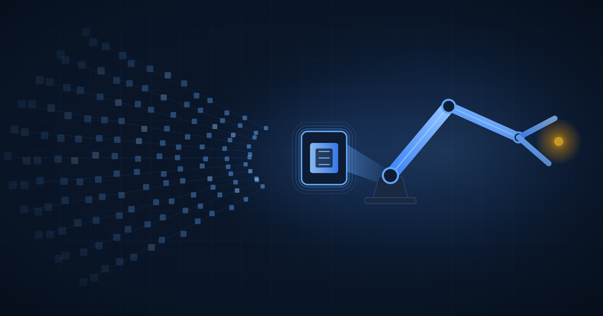

Buying the Format
NVIDIA is reportedly paying $12.9 billion for Hugging Face, and the asset that matters most for robotics is a file format.
Ibrahim AbuAlhaol, PhD, P.Eng., SMIEEE
AI Technical Lead
The most valuable thing Hugging Face ever built was not a model. It was an agreement about what a model file looks like.
That agreement is why from_pretrained() behaves identically against a language model, a speech encoder, and an image segmenter published by three organizations that have never spoken to each other. The weights are commodities. The convention that lets you load them without reading anyone's README is not.
NVIDIA has reportedly agreed to buy Hugging Face for $12.9 billion. The Information broke the story on August 26, 2026, and CNBC, Forbes and TechCrunch followed within a day. No signed agreement has been confirmed publicly, and TechCrunch notes the deal could still collapse. Most of the coverage reads this as a chip company buying a model repository. That reading misses where the asset sits, and it misses robotics almost completely.
Hugging Face standardized the unit of exchange for digital AI. LeRobot is doing the same thing for physical AI, and a standard unit of exchange is the one asset in this industry that compounds.
Robotics never had an import statement
The LeRobot paper, accepted at ICLR 2026, names two reasons the field stayed fragmented. Control middleware is written for specific robots and resists adaptation, so every lab builds its own motor bridge. Datasets lack a common format, so a demonstration recorded in one lab is close to useless in another. Both problems are plumbing. Neither is glamorous. Together they meant that a decade of robot demonstrations could not be pooled into anything resembling a training corpus.
LeRobot answers with two unremarkable pieces of infrastructure: a single Python middleware API covering arms from a 3D-printed manipulator up to a humanoid, and LeRobotDataset, one multimodal format for recording, storing and streaming episodes at high frame rates. Streaming matters more than it sounds. You can train against a remotely hosted corpus without downloading it, which removes the disk and bandwidth barrier that quietly excluded most of the world from robot learning research.
The adoption curve says the plumbing worked. By September 2025 the paper counted more than 16,000 datasets from over 2,200 individual contributors published in the format. By May 2026, LeRobot datasets on the Hugging Face Hub had passed 58,000, up from 1,145 at the end of 2024. Robotics became the fastest-growing dataset category on the Hub, and it got there in about eighteen months.
Cheap arms buy variety, expensive arms buy volume
The hardware costs in the paper explain the split. An SO-100 or SO-101 arm runs about 225 euros. LeKiwi, a mobile manipulator, is about 230. The HopeJR humanoid arm and hand is around 500. An ALOHA bimanual setup is about 21,000, and the Franka Emika Panda sits in that same class. The gap between 225 and 21,000 is not a discount. It is a different distribution model.
Look at what each class of hardware produced. The Panda has 588 datasets in the format but 926,776 episodes and 1.88 million downloads. SO-100 and SO-101 together have 9,126 datasets and 136,809 episodes. Expensive arms live in a small number of well-funded labs that run large centralized collection campaigns, and everyone downloads the result. Cheap arms live on thousands of desks, and each one records a different kitchen and a different pair of clumsy hands. More than half of all community-contributed datasets in the format come from SO-10X hardware.
Generalization needs the second kind. ImageNet did not come from one laboratory photographing a million objects, and a robot policy that works in one lighting rig is a demo. The paper is explicit that decentralized contribution is powered by accessibility: low cost, open designs, 3D-printable parts. Price is a data strategy.
The wall an open library could not knock down
Here is where the open-source story stops being sufficient. The paper benchmarks its own supported policies across four platforms. ACT, at 52 million parameters, returns a forward pass in about 5 milliseconds on an RTX 4090, roughly 100 to 200 Hz and fast enough for real control. SmolVLA at 450 million takes 99 milliseconds. And π0, the 3.5-billion-parameter vision-language-action model, takes 209 milliseconds on the 4090 and fails to complete a single forward pass inside a 5 second limit on a laptop CPU or on Apple's MPS backend. Diffusion Policy fails the same way on CPU.
So the format is public, the arm is 225 euros, the weights are downloadable, and the most capable policy still cannot run on anything you already own. No license fixes that. The constraint is silicon, and it lands hardest on exactly the population LeRobot went to such trouble to include.
The library's own workaround came from engineering rather than parameters. LeRobot decouples action prediction from action execution, computing the next action chunk while the robot is still executing the current one. Running SmolVLA on an SO-100 across three cube-manipulation tasks, that change took the robot from 9 completed cubes in a fixed 60 second window to 19, with success rates roughly flat at 78.3 percent synchronous against 73.3 percent asynchronous. Doubling throughput without touching the model is the kind of win that belongs to whoever owns the runtime.
What the money actually buys
The integration predates the acquisition report by seven weeks. On July 6, 2026, NVIDIA shipped Isaac GR00T 1.7 and Isaac Teleop into LeRobot, registered Isaac Lab-Arena in LeRobot's environment hub so simulation environments could be prototyped and shared like any other artifact, and demonstrated a Jetson Thor board running vision-language-action policies on a Reachy 2 humanoid. It also released an open physical AI dataset of more than 350,000 trajectories and 57 million grasps. Cosmos 3, a world foundation model, was announced as the next piece.
Read that against the stack and the logic is plain. Buying Hugging Face gives NVIDIA no robotics capability it lacked. What it gives NVIDIA is the registry where those capabilities become the default: roughly 3 million robotics developers on one side meeting roughly 16 million AI builders on the other, joined at a format. When a student in Amman downloads a LeRobotDataset, fine-tunes a policy and deploys it, the deployment target is now shaped by whoever governs the tooling.
The part that should make you cautious
Hugging Face's position came from being nobody's vendor. A format that no chip company owns gets adopted by every chip company. Once the registry belongs to a silicon vendor, every design decision in the format carries a second question underneath it: does this make deployment easier or harder on someone else's accelerator?
Nothing in the July integration suggests bad faith. GR00T 1.7 shipped as an open, commercially usable model, and LeRobot remains Apache-2.0. Governance is the thing to watch, not intent, and it is checkable. Track whether LeRobotDataset tooling stays free of vendor-specific dependencies, whether non-CUDA runtimes stay first-class in the inference stack, and whether published model cards keep listing deployment paths that do not end at a Jetson.
A portability check worth automating
from lerobot.datasets.streaming_dataset import StreamingLeRobotDataset
# Run this in CI on a CPU-only runner, with no CUDA available.
ds = StreamingLeRobotDataset("lerobot/svla_so101_pickplace")
frame = next(iter(ds))
# The day this needs a GPU present to succeed, the format
# has stopped being neutral. Make that alert loud.Robotics spent forty years unable to pool its own experience because nobody agreed on what an episode looked like. That problem is now solved, in public, by a library, and the evidence is 58,000 datasets and a 225 euro arm that outproduces a 21,000 euro one in variety. This is the same sequence that turned language models from a research curiosity into infrastructure, running roughly eight years behind.
The acquisition accelerates the physical half of it, because the layer open source could not commoditize is precisely the layer NVIDIA has been building for a decade. It also concentrates that half under one company. Both things are true, and the second is the one to watch, because formats are far easier to adopt than to leave.
What leaders should do
- Buy two SO-101 arms and a Jetson-class board this quarter, roughly the cost of one engineer-week, and have a team record 50 real episodes of a task in your own environment. The output is not a product. It is an answer to how much of your operational knowledge is capturable as demonstrations, before a competitor answers it first.
- Publish your internal robot data in
LeRobotDatasetformat even when it stays private. Format choice is cheap to reverse today and expensive to reverse in two years, and this format now has 58,000 datasets of network effect behind it. - Add a CPU-only, no-CUDA job to your robotics CI that loads your datasets and runs your smallest policy. That job is your early warning that the open stack has quietly acquired a hardware dependency.
- Benchmark inference latency on the board that will sit on the robot before you commit to a policy architecture, not on a workstation GPU. A 3.5-billion-parameter model that cannot close a control loop on your hardware is not a candidate, whatever its benchmark scores say.
Related Articles
References & Extended Literature
- Cadene, R., Aliberts, S., Capuano, F., Aractingi, M., Zouitine, A., Kooijmans, P., Choghari, J., Russi, M., Pascal, C., Palma, S., Shukor, M., Moss, J., Soare, A., Aubakirova, D., Lhoest, Q., Gallouédec, Q., & Wolf, T. (2026). LeRobot: An Open-Source Library for End-to-End Robot Learning. Published as a conference paper at ICLR 2026. arXiv:2602.22818. arxiv.org/abs/2602.22818
- Shukor, M., Aubakirova, D., Capuano, F., Kooijmans, P., Palma, S., et al. (2025). SmolVLA: A Vision-Language-Action Model for Affordable and Efficient Robotics. arXiv:2506.01844. arxiv.org/abs/2506.01844
- NVIDIA (July 6, 2026). NVIDIA and Hugging Face Bring New Models and Frameworks to LeRobot for the Open Robotics Community. NVIDIA Blog. blogs.nvidia.com
- CNBC (August 27, 2026). Nvidia agrees to buy Hugging Face for $12.9 billion, report says. Reporting the original story from The Information. cnbc.com
- TechCrunch (August 26, 2026). Nvidia closes in on Hugging Face acquisition. Notes that no signed agreement had been reached at time of reporting. techcrunch.com
- Hugging Face. LeRobot Community Datasets: The "ImageNet" of Robotics, When and How? Hugging Face Blog. huggingface.co/blog/lerobot-datasets
- Hugging Face. LeRobotDataset v3.0 documentation. huggingface.co/docs/lerobot
- NVIDIA. Isaac GR00T: Generalist Robot 00 Technology. NVIDIA Developer. developer.nvidia.com/isaac/gr00t